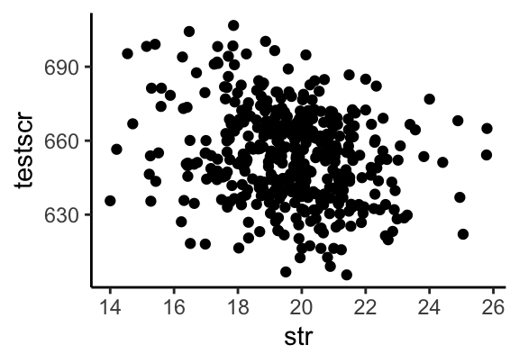
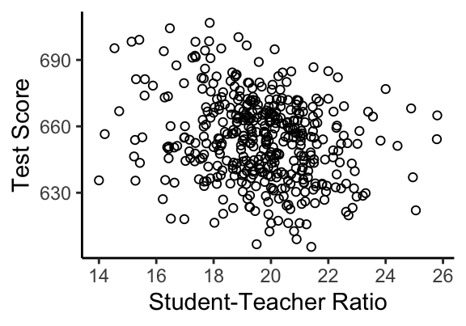
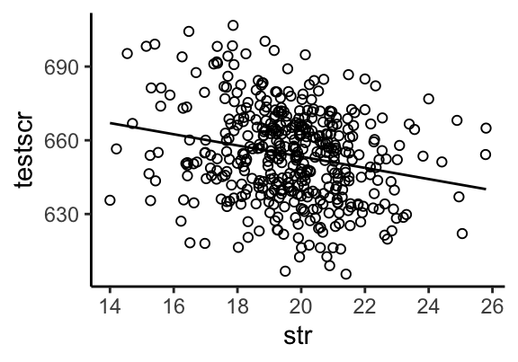
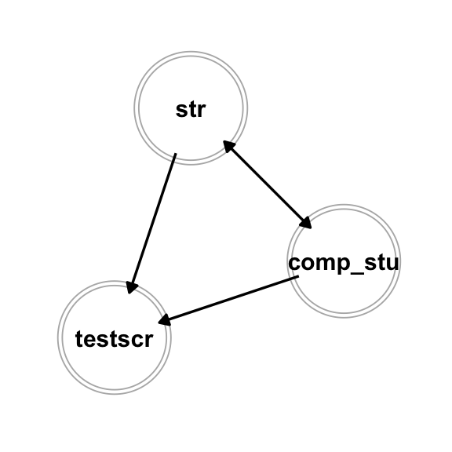

rm(list=ls())
library(tidyverse)
library(stargazer)
#setwd("~/Dropbox (CSU Fullerton)/Econ340_R")
data <- read.csv("caschool.csv")ECON 340
Economics Research Methods
Housekeeping
Scatterplot
ggplot(data, aes(x=str, y=testscr)) +
geom_point() +
theme_classic()
Scatterplot
ggplot(data, aes(x=str, y=testscr)) +
geom_point(shape=1) + theme_classic() +
labs(x="Student-Teacher Ratio", y="Test Score")
Linear Regression
lm()is a function used to fit linear regression models- Syntax:
lm(y ~ x1 + x2 + ... , data = mydata) - Useful to store it as an object
model <- lm(testscr ~ str, data)- Apply
summary()function to the stored result from output
Regression Output
summary(model)Regression Output
- Fitted model: \[ \hat{testscr} = 698.93 - 2.28 \cdot str \]
- \(R^2 = 0.05\) implies that 5% of variation in test scores explained by student teacher ratio
- Standard errors (deviations): \[ SE_{\hat{\beta_0}} = 9.47, \quad SE_{\hat{\beta_1}} = 0.48 \]
Regression Output
- Often interested in testing the hypothesis: \(H_0: \beta_1 = 0 \text{ against } H_1: \beta_1 \neq 0\)
- Corresponding t-value: \[ t_0 = \frac{\hat{\beta_1}}{SE_{\hat{\beta_1}}} = \frac{- 2.28}{0.48} = -4.75\]
- p-value: \(p = 2 Pr(Z>t_0)\)
- If \(p<\alpha\), coefficient significant at \(\alpha \%\) level of significance
Confidence Intervals
\((1-\alpha)\%\) confidence interval is given by: \(\hat{\beta_1} \pm z_{\alpha/2} \cdot SE_{\hat{\beta_1}}\)
Note that \(z_{0.025}=1.96\), so the 95% confidence interval: \[-2.28 \pm 1.96 \cdot 0.48\]
::: {.cell layout-align=“center”}
confint(model)::: {.cell-output .cell-output-stdout}
2.5 % 97.5 % (Intercept) 680.32313 717.542779 str -3.22298 -1.336637::: :::
Predicted and Residual Values
data$yhat <- predict(model)
data$uhat <- residuals(model)Should the average of testscr and yhat be the same?
mean(data$testscr)
mean(data$yhat)What should be the average of uhat?
mean(data$uhat)Predicted and Residual Values
What is the predicted value when str=21?
data %>% select(testscr, str, yhat, uhat) %>%
filter(str==21) testscr str yhat uhat
1 616.3 21 651.057 -34.75699Remember: \[ \hat{testscr} = 698.93 - 2.28 \cdot str \] Note that: \(\hat{u_i} = Y_i-\hat{Y}_i\)
Plotting the Fitted Line
ggplot(data, aes(x=str, y=testscr)) +
geom_point(shape=1) + theme_classic() +
geom_line(aes(y=yhat)) 
Output using Stargazer
stargazer(model, type="text",
keep.stat = c("n", "adj.rsq"))Output from Multiple Models
model1 <- lm(math_scr ~ str, data)
model2 <- lm(read_scr ~ str, data)
stargazer(model1, model2, type="text",
keep.stat = c("n", "adj.rsq"))Output from Multiple Models
Multiple Regression Model
model3 <- lm(testscr ~ str + comp_stu, data)
stargazer(model, model3, type="text",
keep.stat = c("n", "adj.rsq"))- Note: Use the adjusted \(R^2\) to compare two models with different number of variables
Multiple Regression Model
Omitted Variable Bias
- Negative coefficient on
strsmaller in magnitude after controlling forcomp_stu - Lower
comp_stu\(\rightarrow\) Lowertestscr - Lower
comp_stu\(\leftrightarrow\) Higherstr - So
comp_stuexplains some of the relationship betweenstrandtestscr
Omitted Variable Bias

Next Class
- For the next class download and load
acs2019dataset from the Dropbox folder - We will continue with linear regression in R
- Come prepared so we can start quickly